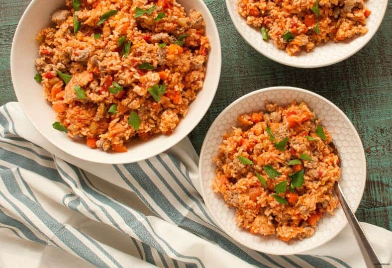

Home
Jambalaya

Description
There are many of foods that are considered to be trademarks of New Orleans,
but only a few can compete with the classic Jambalaya. It is one of
Louisiana's best comfort foods, so allow me to share a recipe to bring
my home into yours!
Jambalaya has numerous styles depedning on where you are in the boot state.
There's “red” jambalayas and “brown” jambalayas, differentiated by core ingredients.
Since I am a New Orleans native, we'll focus on the shrimp style.
Ingredients
- 1 tablespoon unsalted butter
- 4 ounces andouille sausage sliced into rounds
- 4 ounces pickled pork or ham, cut into cubes
- 1 medium-size yellow onion chopped
- 1 bunch of green onions chopped, with white and green parts seperated
- 1 medium-size green pepper, chopped
- 2 cans (10 oz each) crushed tomatoes
- ¼ cup canned toamto purée
- 2 cloves garlic, minced
- 1 whole bay leaf
- 1 teaspoon table salt
- ½ teaspoon ground black pepper
- ¼ teaspoon ground cayenne
- ¼ teaspoon thyme leaves
- 4 cups chicken stock
- 1 tablespoon Louisiana pepper sauce
- 2 cups long-grain white rice, uncooked
- 1 pund raw medium shrimp, peeled
Steps
- Over medium-high heat, melt the butter in a heavy, nonreactive saucepan or Dutch oven.
Add the sausage and pickled pork or ham and cook until all of the fat is rendered out of the meats,
about five minutes, stirring occasionally.
- Add the yellow onions, the white part of the green onions and the sweet peppers.
Cook the vegetables until they are clear, about five minutes, occasionally stirring and scraping the pan bottom clean.
Add the crushed tomatoes, tomato purée, garlic, bay leaf, table salt, black pepper, cayenne, and thyme.
Cook and stir this base sauce about two minutes.
- Add the chicken stock and pepper sauce to the base and bring to a boil.
Reduce the heat to maintain a strong simmer, and simmer the liquid uncovered until it is reduced by one third, about one hour 15 minutes.
Skim any foam or coagulates as they develop on the surface. Return the liquid to a boil and stir in the rice.
- Reduce the heat to medium, and cook uncovered until the rice is just short of being done
(should still be a little firm in the center), about 25 minutes, stirring occasionally.
- Add the shrimp and cook until the rice is tender and the shrimp turn bright pink, about
3 minutes. Do not overcook. Stir in the green part of the green onions.